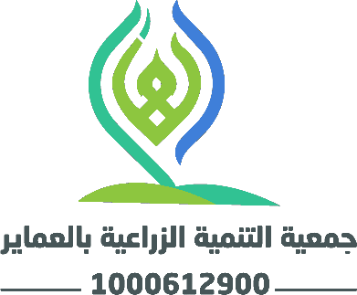

مشروع البيوت المحمية
إنشاء بيوت محمية حديثة لرفع الإنتاجية الزراعية وتوفير فرص دخل مستدامة للأسر المستفيدة.
جمعية التنمية الزراعية بالعماير تعمل على تمكين المجتمع المحلي بمنطقة عسير من خلال برامج زراعية نوعية ومشاريع تنموية تحافظ على الموارد الطبيعية وتحسّن جودة الحياة.

جمعية التنمية الزراعية بالعماير جمعية أهلية مرخصة من المركز الوطني لتنمية القطاع غير الربحي برقم 1000612900، وتعمل تحت إشراف وزارة البيئة والمياه والزراعة في مجال خدمات الحفاظ على الموارد الطبيعية وحمايتها.
نؤمن بأن الزراعة ليست مجرد مورد رزق، بل أسلوب حياة وركيزة تنمية؛ لذا نعمل على نشر الممارسات الزراعية الحديثة، ودعم صغار المزارعين، وإحياء الغطاء النباتي في العماير بمنطقة عسير.
تعرّف علينا أكثرتنمية زراعية مستدامة تُحيي الأرض وتُنمّي الإنسان في العماير.
تمكين المجتمع المحلي عبر برامج زراعية نوعية ومشاريع مستدامة تحافظ على الموارد الطبيعية.
الاستدامة، الشفافية، التمكين، الشراكة المجتمعية، والإتقان في كل عمل.
أربعة برامج تنموية رئيسية ضمن خطتنا التشغيلية للسنة الأولى تخدم أكثر من 500 مستفيد.
إنشاء بيوت محمية حديثة لرفع الإنتاجية الزراعية وتوفير فرص دخل مستدامة للأسر المستفيدة.
خدمات إرشادية وفنية متكاملة للمزارعين تشمل الدعم الفني وتحسين أساليب الري والزراعة.
حملات وقائية وعلاجية لمكافحة الآفات وحماية المحاصيل بأساليب آمنة وصديقة للبيئة.
إنشاء وتشغيل مشتل نموذجي لإنتاج الشتلات المحلية ودعم مبادرات التشجير والتخضير.
ننشر جميع وثائق الحوكمة والتقارير المالية ومحاضر الاجتماعات ليطّلع عليها الجميع، إيماناً منا بأن الشفافية أساس الثقة.
سواء كنت داعماً أو متطوعاً أو شريكاً — مساهمتك تصنع فرقاً حقيقياً في مسيرة التنمية الزراعية بالعماير.